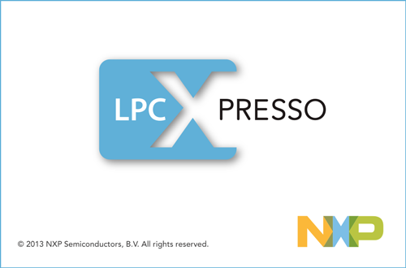
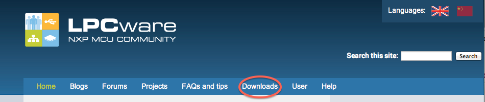
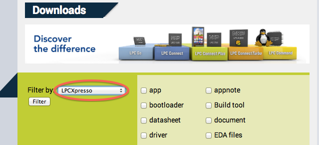
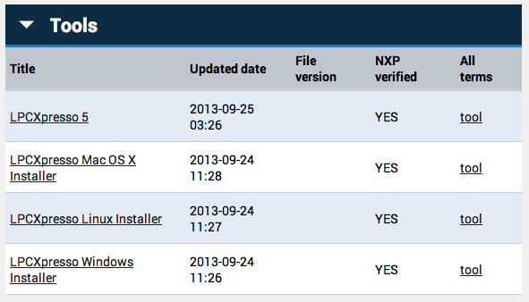

情報処理応用 ー Robocar Programming
LPCXpresso

LPCXpressoの自分PCへのインストール
http://lpcware.com
を開く。
Downloads を選び、

Filter by: に LPCXpresso を選んで、 Filter ボタンを押す。

下の方、Toolsを開く。

自分のPCに合わせたインストーラーをダウンロード。
Let's study programming!
back